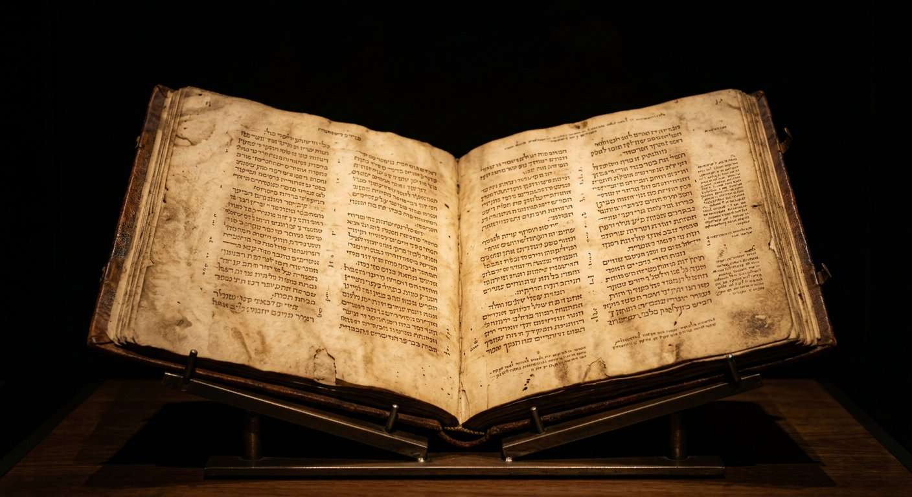

Énigme nº 1 · Marc 16
« La fin de Marc s'arrête avant la résurrection — ou pas. »
Deux thèsesDans les deux plus anciens manuscrits — le Sinaïticus et le Vaticanus (IVe s.) — l'Évangile de Marc s'arrête à 16:8 : les femmes fuient le tombeau, « car elles avaient peur ». Point final. Les versets 9-20 (l'apparition à Marie-Madeleine, puis aux onze) manquent. Thèse 1 : Marc finissait là, sur ce silence troublant. Thèse 2 : la fin originale a été perdue, et les versets 9-20 la restituent — ils sont attestés dès le IIe siècle chez certains auteurs. Les Bibles modernes signalent la divergence en note. Le débat reste ouvert.
